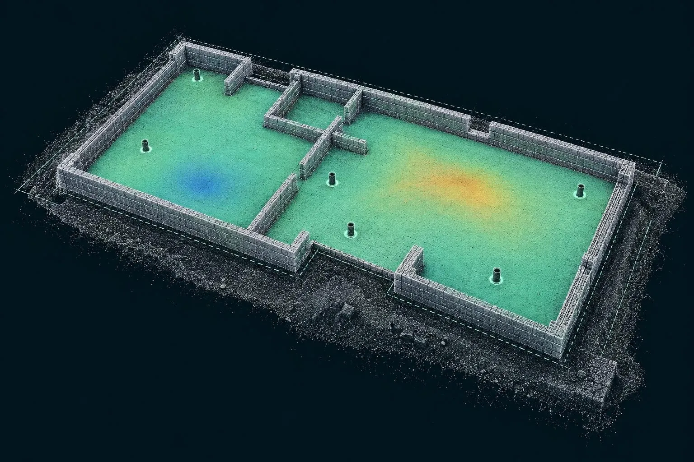

Cost guide
Plot and oversite survey cost
Per-plot pricing for oversite QC, and why scanning plots in batches costs a fraction of one-off visits.

Guide price: plot and oversite scanning costs from £85 per plot when four or more plots are scanned on one visit, from £75 per plot for ten or more, and from £295 for a visit to scan one or two plots. Every plot gets slab flatness, brickwork-to-drawing and drain collar checks, a pass/fail report and the point cloud. Before VAT, travel included within 50 miles of Corby.
| Plots per visit | Guide price | Notes |
|---|---|---|
| 1–2 plots | from £295 per visit | Covers both plots |
| 3 plots | from £325 per visit | Around £108 a plot |
| 4–9 plots | from £85 per plot | The usual visit size |
| 10+ plots | from £75 per plot | Or a site rate for a rolling programme |
| Rescan of a corrected plot | from £45 | Same day as another visit |
Guide prices before VAT, for standard house types with drawings supplied as PDF or DWG.
Why batching makes such a difference
On a plot check the scanning is quick. Most of the cost of a one-off visit is getting there, getting inducted, and setting up the site control. Once that's done, each extra plot adds relatively little. Booking plots in runs, or as a regular weekly or fortnightly visit, spreads the fixed cost thinly.
What a failed plot costs without a scan
The real comparison isn't scan versus no scan. It's the scan versus what a missed defect costs later. A soil collar 75 mm out of position, found after the bathroom is fitted, means lifting the floor, breaking out the slab and re-routing the pipe. An out-of-square plot found by the timber frame erector stops the frame gang. A high spot in a slab found by the flooring fitter means grinding or a thicker screed. Each of those costs more than scanning a whole phase.
Worked examples
Six plots reaching oversite this week
One visit, six reports. 6 × £85 = £510.
A 120-plot phase on a rolling programme
Fortnightly visits scanning whatever has reached oversite, with a site rate agreed up front. Typically from £75 per plot, with rescans of corrected plots at £45.
One plot with a problem
A housebuilder disputes an oversite. One visit, full report, independent record. From £295.
Included on every plot
- Slab flatness heat-map
- Brickwork dimensions vs drawing
- Drain collar positions vs layout
- One-page pass/fail report
- Point cloud for the plot
- Report next working day
How the checks work: plot and oversite scanning. All services: price guide.
Plot scanning across the area
Questions we get asked
How much does an oversite scan cost per plot?
From £85 per plot when four or more plots are scanned on the same visit, and from £75 per plot for ten or more. A visit for one or two plots is from £295.
What's included in the price of a plot oversite scan?
All three checks (slab flatness, brickwork dimensions to the house-type drawing and drain collar positions), the one-page pass/fail report per plot with heat-map, and the point cloud.
Is there a discount for scanning plots across a whole site?
Yes. For a rolling programme across a phase or a whole site, we agree a per-plot rate and visit on a regular schedule, so plots are scanned as they reach oversite.
How much does it cost to rescan a plot that failed its oversite check?
A rescan of a corrected plot is from £45 when it's done on the same day as another visit to the site.
Why does a single-plot oversite scan cost more per plot?
Because most of the cost of a visit is fixed: travel, site induction and setting up, not the scanning itself. A visit for one or two plots is from £295 and three plots from £325, while four to nine plots are from £85 each. Booking plots in runs, or as a regular weekly or fortnightly visit, spreads that fixed cost thinly across every plot.
Is travel included in the price of plot scanning?
Yes, within 50 miles of Corby, which takes in most housing sites in Northamptonshire, Leicestershire, Rutland, Milton Keynes, Bedfordshire and around Peterborough. Sites anywhere else in the UK are covered with travel added to the quote. Combining plot checks with a road scan on the same site shares the visit and keeps the cost per plot down.
Book a scan or ask a question
Send the drawing, the location and when you need it. We reply the same working day with a fixed price.